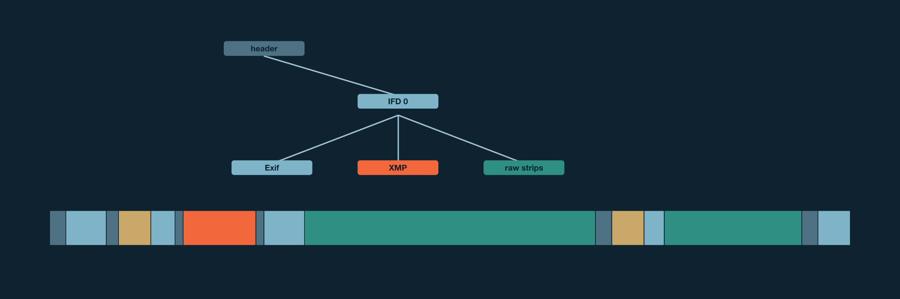

A DNG file is a TIFF file: a header, then a graph of directories (IFDs) whose entries point at values, at other directories and at image data scattered through the file. Somewhere in that graph is usually one XMP packet: the text where Lightroom and other editors write keywords, ratings and develop settings.
Editing a photo’s metadata in place means rewriting that packet and nothing else. To do that safely you need to know two things for certain: where the packet is, and that no other part of the file lives inside it. A TIFF reader that understands most files is not enough for that, because the files it half understands are the dangerous ones. A private field may hold an offset that points into the packet, and rewriting the packet would then corrupt something you never saw.
tiffgraph is a walker built for that question. Given a file and a grammar, it does one of two things:
It never guesses. A field outside the grammar is a refusal, not something to skip.
It can also report the file’s physical regions, from the header to the last byte of image data, each with a role. That is useful for deduplication, for diffing two versions of a file, and for computing identities over parts of a file.

tiffgraph began as the DngSemantic module of Semantic
Unison, a fork of the Unison file synchronizer that can merge metadata
edits to the same photo made on two machines. The grammars are the ones
Semantic Unison negotiates between peers as its
org.firstpair.dng-xmp/0, /1 and
/2 profiles. It became its own package on 2026-11-02, so
that other projects could use it without Unison. One of them is
phidentify, a library of named identities for photo files.
The code moved without change. The old and new walkers gave byte-identical results on 328 local DNGs, and Unison’s own DNG tests pass against the package.
The same day it gained a second build, in Rust: a line-for-line port with the same grammars, limits, order of checks and refusal reasons. The two builds are compared file by file, as the chapter on Rust describes.